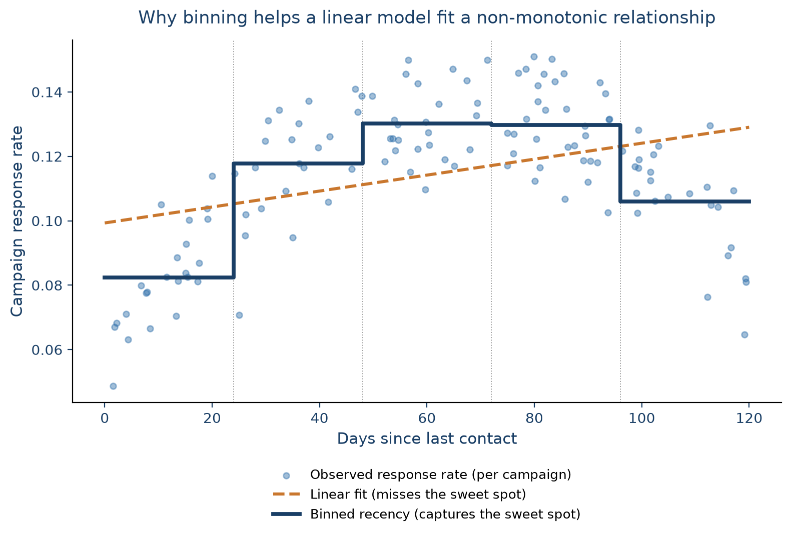
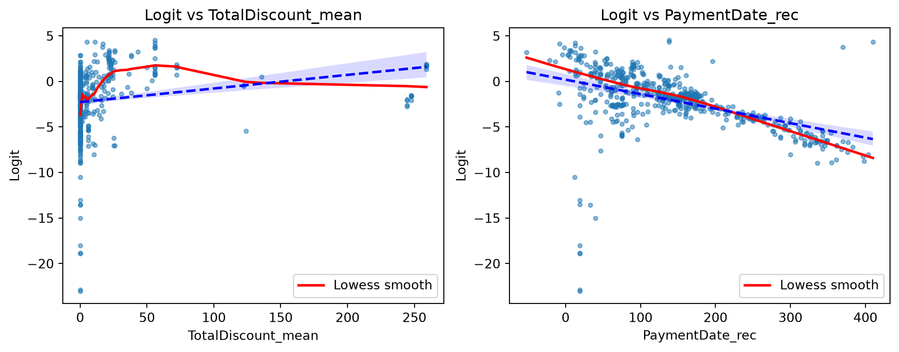

The previous chapter cleaned up train_data and test_data: missing values imputed, negative ages fixed, multicollinearity flagged. That’s a proper dataset to explore, but most of it still can’t go into a predictive model as-is: categorical columns need to become numbers, some continuous variables would benefit from being simplified, and every feature needs to be on a scale a model can work with. That’s what data preparation covers.
It’s easy to underestimate how much this step matters. Some authors argue that it’s the data preparation, not the algorithm, that mainly drives predictive performance (Coussement et al. 2017). Variables get transformed or reduced for a few reasons: to be interpretable, to overcome bias, to actually be usable by a given model, and simply to carry more predictive value than the raw column did. It’s also the most time-consuming step of the whole process, which is exactly why it’s worth doing carefully.
Broadly, this chapter covers four things:
Value transformation: turning continuous variables into simpler categorical ones.
Value representation: turning categorical variables into a numeric form a model can use.
Feature engineering: creating new features and transforming existing ones to help a model fit better.
Variable selection: reducing the number of features to only those that actually carry predictive value.
Let’s pick up where the previous chapter left off, and load the cleaned training and test sets:
import pandas as pdimport numpy as npimport matplotlib.pyplot as pltimport seaborn as snstrain_complete = pd.read_parquet("../data/raw/train_complete.parquet")train_data = train_complete.drop(columns=["target"])train_target = train_complete["target"]test_complete = pd.read_parquet("../data/raw/test_complete.parquet")test_data = test_complete.drop(columns=["target"])test_target = test_complete["target"]print(f"Training data shape: {train_data.shape}")train_data["Age"].describe()
Training data shape: (589, 41)
count 589.000000
mean 60.779287
std 10.723909
min 1.000000
25% 61.000000
50% 61.000000
75% 61.000000
max 96.000000
Name: Age, dtype: float64
5.1 Value transformations
5.1.1 Continuous categorization (binning)
Binning (also called discretization, coarse-classification, or classing) transforms a continuous variable into a categorical one with a handful of ranges instead of many individual values. There are two main reasons to do this:
Fewer parameters to estimate: A categorical variable with a lot of levels (e.g., in our case the ZIP variable has well over a hundred) needs one dummy variable per level (minus one) in an analytical model. Grouping those levels into a handful of bins keeps the model far more compact and robust.
Capturing non-monotonic relationships in linear models: A linear model can only fit a straight line. If the true relationship between a variable and the outcome isn’t monotonic, binning lets a linear model approximate it anyway, since each bin gets its own coefficient. For example, in a real credit-scoring model Van Gool et al. (2012) find exactly this for requested loan duration: the riskiest loans turn out to be the medium-term ones, not the longest ones. This is a pattern a single linear term would have missed entirely, and one their binned model picks up directly.
Figure 5.1 illustrates the second point with a hypothetical marketing example: a campaign’s response rate against how many days it’s been since the customer was last contacted. Response is low right after contact (fatigue since nobody likes being messaged twice in a row), climbs to a “sweet spot” a few weeks out, then drops again as the customer disengages. A straight line can’t capture this rise-then-plateau-then-fall pattern. What it actually does is create a misleading representation of the true relationship. Binning recency into a handful of ranges lets even a plain linear model pick up the sweet spot, since each range gets its own estimated response level.

Figure 5.1: Why binning helps a linear model fit a non-monotonic relationship: a straight line (orange) averages away the rise-and-fall pattern, while a binned step function (navy) tracks it closely.
Two very basic binning strategies are equal-width binning (bins created with the same range of values) and equal-frequency binning (bins containing the same number of observations). Both are simple but don’t take the target variable into account at all. For categorical variables, the equivalent ideas are grouping (combining several levels into one) and remapping (rebuilding categories around their relationship with the target, e.g. via a chi-square analysis).
sklearn has KBinsDiscretizer, but feature-engine offers more convenient binning transformers:
EqualFrequencyDiscretiser: equal-frequency bins.
EqualWidthDiscretiser: equal-width bins.
DecisionTreeDiscretiser: uses a decision tree to find the optimal split points taking into account the target variable (out of scope here).
As with everything so far, binning is fit on the training data only, then applied or transformed to the test set:
from feature_engine.discretisation import EqualFrequencyDiscretiser, EqualWidthDiscretiserfreq_binner = EqualFrequencyDiscretiser(variables=["Age"], q=10)train_freq_binned = freq_binner.fit_transform(train_data)width_binner = EqualWidthDiscretiser(variables=["Age"], bins=3)train_width_binned = width_binner.fit_transform(train_data)print("Equal-frequency bin edges (10 bins):")print(freq_binner.binner_dict_["Age"])print("\nEqual-width bin edges (3 bins):")print(width_binner.binner_dict_["Age"])
Whether a binning is actually useful is a separate question from whether it’s possible. The way to check is to look at how well it separates the outcome you care about. If churn rate differs clearly and fairly monotonically across bins, and each bin still has enough observations to be reliable, the binning is doing real work:
Equal-frequency only produced 6 bins, not the requested 10.Age has a lot of repeated values, so several of the 10 requested quantile edges collapsed onto the same value. This is very common in quantile-based binning whenever a variable has many ties.
Neither binning is straightforwardly reliable. Equal-width binning looks like the cleaner story (e.g., churn drops monotonically from bin to bin) but its first bin holds only 15 observations, far too few to trust a 53% churn rate from. Equal-frequency binning has properly sized bins throughout, but the churn rate across them doesn’t move monotonically at all (35% → 32% → 27% → 13% → 18% → 25%): it dips, then partly recovers.
The take-away: binning Age this way doesn’t reveal a strong, trustworthy relationship with churn here. It means Age on its own is a weaker predictor of churn than the binning exercise might have hoped to show, and any apparent pattern (like the width-binned one) needs its bin sizes checked before it’s believed. Therefore, we’ll leave Age as a continuous variable for now, and move on to the next step: representing categorical variables numerically.
5.2 Value representations
The most common way to represent a discrete variable numerically is one-hot (dummy) encoding. In short, each category of a variable becomes its own 0/1 column or dummy variable. For example, an Income category variable with levels High, Medium, and Low becomes three 0/1 columns, one of which is typically dropped as the reference category to avoid multicollinearity between the dummies:
Income category
Income_high
Income_medium
High
1
0
Medium
0
1
Low
0
0
One-hot encoding works well as long as the number of categories stays manageable. When a variable has many categories, it needs a different treatment, covered in its own section below (Weight of Evidence), since it’s important enough to deserve one.
5.2.1 One-hot encoding
For a categorical variable with a limited number of categories (say, fewer than 10), one-hot encoding is usually the right default since it is:
Simple to interpret: each dummy is just presence/absence of one category.
No information loss: every original category is preserved (unlike binning).
Broadly compatible: works with linear models and tree-based models alike.
One thing to watch for in a predictive setting: training and test data need to end up with the same dummy columns. If a category shows up only in the test set, a model trained without it simply can’t make use of it. sklearn’s OneHotEncoder, fit on the training set with handle_unknown="ignore", handles this cleanly. Any category the test set has that training didn’t will just come out as all zeros, rather than raising an error.
Let’s apply it to Gender and District:
from sklearn.preprocessing import OneHotEncodercategorical_vars = ["Gender", "District"]train_cats = {var: set(train_data[var].unique()) for var in categorical_vars}test_cats = {var: set(test_data[var].unique()) for var in categorical_vars}inconsistencies = {var: test_cats[var] - train_cats[var] for var in categorical_vars if test_cats[var] != train_cats[var]}if inconsistencies:print(f"Categories in test but not train: {inconsistencies}")else:print("Train and test sets have consistent categories")
Categories in test but not train: {'District': {np.float64(4.0)}}
# drop="first" avoids the dummy-variable multicollinearity from the reference category above# handle_unknown="ignore" sets any unseen test-time category to all zerosdummy_encoder = OneHotEncoder(drop="first", sparse_output=False, handle_unknown="ignore")dummy_encoder.fit(train_data[categorical_vars])feature_names = dummy_encoder.get_feature_names_out(categorical_vars)print(f"Feature names after dummy encoding: {feature_names}")train_dummies = pd.DataFrame( dummy_encoder.transform(train_data[categorical_vars]), columns=feature_names, index=train_data.index,)test_dummies = pd.DataFrame( dummy_encoder.transform(test_data[categorical_vars]), columns=feature_names, index=test_data.index,)print(f"Training dummies shape: {train_dummies.shape}")print(f"Test dummies shape: {test_dummies.shape}")train_dummies.head()
Feature names after dummy encoding: ['Gender_M' 'District_2.0' 'District_5.0' 'District_6.0' 'District_7.0'
'District_8.0' 'District_9.0']
Training dummies shape: (589, 7)
Test dummies shape: (589, 7)
/Users/matthiasbogaert/anaconda3/envs/DA2026/lib/python3.11/site-packages/sklearn/preprocessing/_encoders.py:262: UserWarning: Found unknown categories in columns [1] during transform. These unknown categories will be encoded as all zeros
warnings.warn(msg, UserWarning)
Gender_M
District_2.0
District_5.0
District_6.0
District_7.0
District_8.0
District_9.0
0
1.0
0.0
1.0
0.0
0.0
0.0
0.0
1
1.0
0.0
0.0
0.0
0.0
0.0
0.0
2
1.0
0.0
1.0
0.0
0.0
0.0
0.0
3
1.0
0.0
0.0
0.0
1.0
0.0
0.0
4
1.0
0.0
0.0
0.0
1.0
0.0
0.0
Finally, swap the original categorical columns for their dummy versions:
train_with_dummies = pd.concat([train_data.drop(columns=categorical_vars), train_dummies], axis=1)test_with_dummies = pd.concat([test_data.drop(columns=categorical_vars), test_dummies], axis=1)print(f"Training data with dummies shape: {train_with_dummies.shape}")print(f"Test data with dummies shape: {test_with_dummies.shape}")
Training data with dummies shape: (589, 46)
Test data with dummies shape: (589, 46)
5.2.2 Weight of Evidence
Two variables in our data, ZIP and StreeID, are still not usable: they have far too many categories for one-hot encoding to be practical. Turning either one into dummies would blow up the number of predictors and increase computation time enormously. There are two common ways to handle this:
Keep only the top categories by frequency, grouping everything else into “other”. Simple, but throws away information.
Weight of Evidence (WoE), which is much better suited to high-cardinality variables.
Let’s first check just how high the cardinality actually is:
high_cardinality_vars = ["ZIP", "StreeID"]for var in high_cardinality_vars: unique_count = train_with_dummies[var].nunique()print(f"{var}: {unique_count} unique categories")
Weight of Evidence summarizes a categorical variable into a single numeric column, computed per category as:
\[\text{WOE} = \ln\left(\frac{\text{\% of positives}}{\text{\% of negatives}}\right)\]
where “positive” and “negative” refer to the two classes of a binary target (here, churners and non-churners respectively) matching how churn is coded (1/0) throughout this book. A positive WoE means a category has relatively more positives (churners) than negatives; a negative WoE means the opposite. It’s widely used in practice, particularly in credit scoring (Van Gool et al. 2012).
WoE belongs to a broader family of techniques called target statistics (also called target encoding): replace each category with some summary of the target computed within that category. The simplest version computes each category’s raw target mean, which we’ll use directly later in this chapter for ordinal variables. That simplest version has a real weakness on a variable like ZIP, though: many categories have only a handful of observations, and a mean computed from three or four rows is noise dressed up as a number, not a genuine signal. Micci-Barreca (2001) shows this is exactly why a per-category target mean is normally blended with the overall mean (shrinkage) rather than used raw, and Prokhorenkova et al. (2018) describes the same failure mode, there called target leakage, as the reason more recent methods such as CatBoost’s ordered target statistics exist at all. That’s a reliability problem shared by any target statistic, WoE included, which is exactly why grouping rare categories comes first (Step 2 below), before computing anything: it protects whichever statistic you use from being estimated on an unreliably small group.
So why WoE specifically instead of the raw target mean, even after that protection is in place? Two reasons. First, Moeyersoms and Martens (2015) directly compared a raw target-ratio encoding against WoE on a real churn-prediction dataset and found WoE gave the best results across several classifiers, including logistic regression. Second, its scale fits a model like logistic regression more naturally: WoE is a log-odds transform, and logistic regression predicts log-odds, not probability, so a WoE-encoded category sits on the same scale the model is actually estimating, whereas a raw target mean (a bounded probability) doesn’t, and tends to behave less smoothly as a category’s rate approaches 0% or 100%.
A closely related metric is the Information Value (IV), which sums a weighted version of the WoE across all categories of a variable into a single number summarizing how predictive that whole variable is: \(\text{IV} = \sum_i (\%\text{positive}_i - \%\text{negative}_i) \times \text{WOE}_i\).
An illustrative example below shows how to compute WoE and IV for a hypothetical PaymentType variable against churn (positive = churner, negative = non-churner):
PaymentType
Count
Distr. Count
Positive
Distr. Positive
Negative
Distr. Negative
WOE
IV
Direct debit
800
40.00%
50
13.51%
750
46.01%
−1.2252
0.3982
Bank transfer
500
25.00%
80
21.62%
420
25.77%
−0.1754
0.0073
Credit card
450
22.50%
120
32.43%
330
20.25%
+0.4712
0.0574
Cash
250
12.50%
120
32.43%
130
7.98%
+1.4028
0.3431
Total
2000
370
1630
0.8060
Cash customers churn far more than the base rate (a strongly positive WoE), direct debit customers churn far less (a strongly negative WoE), and the variable’s total IV of 0.81 would count as a strong predictor by the usual rule of thumb:
IV
Predictive power
< 0.02
Unpredictive
0.02 to 0.1
Weak
0.1 to 0.3
Medium
> 0.3
Strong
Two things make WoE attractive for high-cardinality variables: it reduces dimensionality (many categories become one numeric column), and it creates a monotonic relationship with the target, which linear models can exploit directly.
Implementing WoE takes a few steps: check data quality, group rare categories, fit WoE, then apply it to build the final dataset.
Step 1: check data quality. WoE breaks down for a category that’s 100% or 0% one class (the log ratio is undefined), so it’s worth checking how common that is per variable first. A rough heuristic: if more than about 80% of a variable’s categories are problematic like this, it’s probably not a good candidate for WoE at all.
StreeID turns out to be almost entirely problematic categories, so we’ll exclude it from WoE and just drop it later. ZIP looks usable.
Step 2: group rare categories. Before fitting WoE, grouping infrequent categories into a single “Rare” bucket with RareLabelEncoder makes the resulting WoE values more stable:
TipDummy encoding vs. WoE: use both, for different variables
They try to solve the same problem, namely turning a categorical variable into numbers, but they’re not really competitors, since they sit at opposite ends of the cardinality spectrum. Dummy encoding preserves the most detail per category but doesn’t scale well after 10 categories; WoE scales to hundreds of categories and guarantees a monotonic relationship with the target, at the cost of collapsing each category down to a single number. In practice, a single dataset often needs both at once, depending on the needs of different columns, which is exactly as we just did.
5.3 Feature engineering
Feature engineering is the process of creating new features, or transforming existing ones, to help a model perform better in terms of predictive performance, interpretability, or both. It pays to keep the target model’s biases in mind: a linear model needs features that separate the classes roughly linearly, so a raw date-of-birth column is far less useful to it than an age computed from it.
Recency, Frequency, and Monetary value (RFM) features are a classic example of this kind of engineering (Baesens et al. 2021): instead of feeding a model per-transaction data, summarize each customer’s behavior along three simple dimensions:
Recency: how long since the customer’s last transaction, payment, or contact.
Frequency: how often the customer transacts, e.g. per month or per year.
Monetary: how much value those transactions carry, e.g. average, minimum, or maximum spend.
A fourth dimension, length of relationship (time since the customer’s first transaction), is often added alongside the classic three. In fact, it’s closely related to the customer-tenure and duration modeling used in CRM attrition research (Van den Poel and Larivière 2004). Each dimension can also be operationalized in several ways: frequency over different windows (last month vs. last year), monetary value summarized differently (average vs. highest vs. lowest), or any of the above computed separately per product, time period, or channel. RFM-style features are heavily used in CRM (Buckinx and Van den Poel 2005), fraud analytics (Baesens et al. 2021), and credit scoring (Hsieh 2004). Several of the aggregated columns already in our dataset (purchase counts, average discount, days since last payment) are exactly this kind of feature. We won’t build RFM features from scratch here since they’re already present, but it’s worth knowing the term and the reasoning behind it.
Let’s take stock of where the dataset stands after value representation:
5.3.1.1 Visual inspection for non-linear relationships
Before reaching for a transformation, it’s worth checking whether one is actually needed. A convenient way to do that for a binary target is to fit a logistic regression on everything, then plot each feature against the model’s logit (the log-odds it predicts). If a LOESS curve through that relationship tracks a straight line closely, the feature is already behaving roughly linearly with respect to the target; if it diverges, a transformation might help.
/Users/matthiasbogaert/anaconda3/envs/DA2026/lib/python3.11/site-packages/sklearn/linear_model/_logistic.py:599: ConvergenceWarning: lbfgs failed to converge after 1000 iteration(s) (status=1):
STOP: TOTAL NO. OF ITERATIONS REACHED LIMIT
Increase the number of iterations to improve the convergence (max_iter=1000).
You might also want to scale the data as shown in:
https://scikit-learn.org/stable/modules/preprocessing.html
Please also refer to the documentation for alternative solver options:
https://scikit-learn.org/stable/modules/linear_model.html#logistic-regression
n_iter_i = _check_optimize_result(
/Users/matthiasbogaert/anaconda3/envs/DA2026/lib/python3.11/site-packages/statsmodels/nonparametric/smoothers_lowess.py:226: RuntimeWarning: invalid value encountered in divide
res, _ = _lowess(y, x, x, np.ones_like(x),

The two lines are close for both features here, which suggests a fairly linear relationship already. TotalDiscount_mean diverges slightly more than PaymentDate_rec, so it’s the more plausible candidate for a transformation. Let’s try a couple anyway, to see what they’d actually buy us.
5.3.1.2 Polynomial features
Polynomial features add higher-order and interaction terms, letting a linear model capture curvature it otherwise couldn’t. Let’s create a degree-2 polynomial expansion of TotalDiscount_mean:
Original accuracy: 0.8727
With polynomial feature: 0.8778 (Δ = +0.0051)
/Users/matthiasbogaert/anaconda3/envs/DA2026/lib/python3.11/site-packages/sklearn/linear_model/_logistic.py:599: ConvergenceWarning: lbfgs failed to converge after 1000 iteration(s) (status=1):
STOP: TOTAL NO. OF ITERATIONS REACHED LIMIT
Increase the number of iterations to improve the convergence (max_iter=1000).
You might also want to scale the data as shown in:
https://scikit-learn.org/stable/modules/preprocessing.html
Please also refer to the documentation for alternative solver options:
https://scikit-learn.org/stable/modules/linear_model.html#logistic-regression
n_iter_i = _check_optimize_result(
5.3.1.3 Power transformations
Power transformations reshape a variable’s distribution, often to make it more Gaussian-like and to stabilize its variance, which can help both linear models and any method that assumes a normal distribution of errors. A simple logarithmic transformation (x -> log(x), or x -> log(1 + x) when zeros are present) is the most common case, typically applied to strictly-positive, right-skewed “size” variables like loan amounts or revenue. More general power transforms (x -> x^λ) trade off skew in either direction depending on λ, at the cost of needing to fit that λ.
Box-Cox and Yeo-Johnson are the two standard ways to fit λ automatically rather than guessing it. Box-Cox only works for strictly positive values; Yeo-Johnson extends it to handle zero and negative values too (and reduces to Box-Cox exactly when all values are positive). In sklearn, this works the same way as everything else fit in this book: PowerTransformer’s .fit() estimates λ directly from the training data (i.e., the value that makes the transformed distribution closest to Gaussian) rather than you having to search for it by hand. Let’s try Yeo-Johnson on the same feature:
Original accuracy: 0.8727
With Yeo-Johnson feature: 0.8795 (Δ = +0.0068)
/Users/matthiasbogaert/anaconda3/envs/DA2026/lib/python3.11/site-packages/sklearn/linear_model/_logistic.py:599: ConvergenceWarning: lbfgs failed to converge after 1000 iteration(s) (status=1):
STOP: TOTAL NO. OF ITERATIONS REACHED LIMIT
Increase the number of iterations to improve the convergence (max_iter=1000).
You might also want to scale the data as shown in:
https://scikit-learn.org/stable/modules/preprocessing.html
Please also refer to the documentation for alternative solver options:
https://scikit-learn.org/stable/modules/linear_model.html#logistic-regression
n_iter_i = _check_optimize_result(
In this case, neither the polynomial term nor the Yeo-Johnson transform moved training accuracy much. This is consistent with the logit plots above, which already showed a fairly linear relationship. That’s a useful negative result: it means we can discard both here rather than carrying extra, unhelpful complexity forward.
That’s not always the case, though. Sometimes a transformation like this is the difference between a model that’s good enough to detect a real, actionable relationship and one that isn’t. Wang et al. (2019) study how a seller’s mix of marketing versus non-marketing social media posts relates to how popular those posts become, and specifically whether there’s an optimal level of marketing aggressiveness. The effect of aggressiveness level is an inverted U-shape curve, quantified with a quadratic term in a plain linear regression too. But applying a Yeo-Johnson transform to one of their control variables (a seller’s number of followers) nearly triples the model’s R² compared to the untransformed version. The take-away: the transformation itself didn’t reveal the U-shape; it made the model reliable enough to trust the U-shape it found.
NoteInteraction effects
Sometimes a variable has no linear effect on its own: \(y \not\leftarrow f(x_1)\) and \(y \not\leftarrow f(x_2)\) individually, but the combination\(y \leftarrow f(x_1, x_2)\) does, often represented simply as the product \(x_1 \times x_2\). A classic example: Gender on its own might show no relationship with an outcome, but Gender × Income might, if the effect of income differs by gender. This is sometimes called moderation, with the interaction term acting as the moderator.
5.4 Standardization and normalization
Different algorithms need scaling for different reasons: distance-based methods like k-nearest neighbors and linear models with regularization need it directly, neural networks need it to avoid numerical overflow, and tree-based models don’t need it at all. The two most common approaches are:
Standardization: rescale to mean 0, standard deviation 1 (the z-score). Good for distance-based algorithms and for comparing coefficients across features.
Min-max normalization: rescale to a fixed range, typically [0, 1]. Common for neural networks and any method that expects bounded input.
As with the transformations above, sklearn estimates the numbers each scaler needs directly from the data: StandardScaler.fit() computes each feature’s mean and standard deviation, MinMaxScaler.fit() computes its min and max, and .transform() applies them.
WarningFit on training, transform on test and never scale dummy variables!
The fit-on-train, transform-on-both rule from the previous chapter applies here too: fit the scaler on training data only, then use it to transform both sets. There’s a second, easy-to-miss mistake specific to scaling: don’t scale dummy/binary columns. A one-hot column only ever takes the values 0 and 1, and standardizing it doesn’t make it more useful. More importantly, it destroys the direct 0/1 interpretation. Hence, only continuous features should go through the scaler.
binary_features, continuous_features = [], []for col in train_final.columns: unique_values =set(train_final[col].unique())if unique_values == {0, 1}: binary_features.append(col)else: continuous_features.append(col)print(f"Binary features (not scaled): {len(binary_features)}")print(f"Continuous features (scaled): {len(continuous_features)}")train_binary, train_continuous = train_final[binary_features], train_final[continuous_features]test_binary, test_continuous = test_final[binary_features], test_final[continuous_features]
Binary features (not scaled): 11
Continuous features (scaled): 34
scaler = StandardScaler()scaler.fit(train_continuous)train_continuous_scaled = pd.DataFrame( scaler.transform(train_continuous), columns=continuous_features, index=train_final.index,)test_continuous_scaled = pd.DataFrame( scaler.transform(test_continuous), columns=continuous_features, index=test_final.index,)# recombine, keeping the original column ordertrain_final_scaled_df = pd.concat([train_continuous_scaled, train_binary], axis=1)[train_final.columns]test_final_scaled_df = pd.concat([test_continuous_scaled, test_binary], axis=1)[test_final.columns]print(f"Final scaled training shape: {train_final_scaled_df.shape}")print(f"Final scaled test shape: {test_final_scaled_df.shape}")
Final scaled training shape: (589, 45)
Final scaled test shape: (589, 45)
Transformation
When to use
Example algorithms
Standardization
Distance-based methods, comparing coefficients
SVM, KNN, linear/logistic regression
Min-max normalization
Bounded features needed
Neural networks, some clustering methods
Polynomial features
Non-linear relationships in a linear model
Linear/logistic regression
Power transforms
Skewed data, improving normality
Linear models, parametric tests
No scaling
Split-based models
Random forests, gradient boosting, decision trees
5.5 Variable selection
Real datasets usually come with far more variables than actually needed to achieve good predictive performance. Searching every possible subset is computationally infeasible (even in today’s world). So variable selection methods use a heuristic instead: keep predictors that are strongly related to the response and weakly related to each other, and drop the rest. In other words, delete both the ones that are irrelevant (unrelated to the target) and the ones that are redundant (correlated with another predictor that already carries the same information). This isn’t purely a matter of convenience: more compact models are also faster to estimate, and can genuinely perform better (thanks to the curse of dimensionality), since more variables for a fixed number of observations makes the prediction task harder, not easier (Verbeke et al. 2012).
Three broad families of methods exist: filter methods (fast, univariate, model-independent), wrapper methods (recursive feature elimination, and stepwise selection, considered more expensive since they retrain a model repeatedly), and embedded methods (regularization such as L1/L2/elastic net, built directly into the model-fitting process). Filter methods are covered here, and the other two families are introduced in the next chapters.
5.5.1 Filter methods
Filter methods score each predictor’s univariate relationship with the target, independent of any model, which makes them a fast first screening pass. Which score to use depends on the variable type:
Continuous target
Categorical target
Continuous variable
Pearson correlation
Fisher score / ANOVA
Categorical variable
Fisher score / ANOVA
Information Value, Cramér’s V
For our continuous features against the (categorical) churn target, sklearn’s f_classif plays the role of the Fisher score, paired with SelectKBest to keep only the top-scoring ones:
/Users/matthiasbogaert/anaconda3/envs/DA2026/lib/python3.11/site-packages/sklearn/feature_selection/_univariate_selection.py:110: UserWarning: Features [11 13] are constant.
warnings.warn("Features %s are constant." % constant_features_idx, UserWarning)
/Users/matthiasbogaert/anaconda3/envs/DA2026/lib/python3.11/site-packages/sklearn/feature_selection/_univariate_selection.py:111: RuntimeWarning: invalid value encountered in divide
f = msb / msw
feature
f_score
19
StartDate_rec
105.595305
21
PaymentDate_rec
93.995147
28
FormulaDiscount_mean
71.133723
26
NetNewspaperPrice_mean
52.653478
23
NbrStart_mean
34.391696
30
TotalPrice_mean
33.057998
17
PaymentStatus_Paid_sum
31.056359
14
Pattern_1111110_sum
28.830724
15
PaymentType_BT_sum
24.807797
25
NetFormulaPrice_mean
22.855152
For the binary (dummy) features, chi-squared and mutual information are the equivalent tools:
from sklearn.feature_selection import mutual_info_classif, chi2k_best_categorical =min(5, len(binary_features))selector_chi2 = SelectKBest(score_func=chi2, k=k_best_categorical)selector_chi2.fit(train_binary, train_target)selected_chi2 = [f for f, keep inzip(binary_features, selector_chi2.get_support()) if keep]selector_mi = SelectKBest(score_func=mutual_info_classif, k=k_best_categorical)selector_mi.fit(train_binary, train_target)selected_mi = [f for f, keep inzip(binary_features, selector_mi.get_support()) if keep]print(f"Top by chi-squared: {selected_chi2}")print(f"Top by mutual information: {selected_mi}")
Top by chi-squared: ['RenewalDate_rec_missing', 'PaymentDate_rec_missing', 'Gender_missing', 'District_7.0', 'District_9.0']
Top by mutual information: ['Pattern_0000100_sum', 'RenewalDate_rec_missing', 'District_2.0', 'District_8.0', 'District_9.0']
Combining the two: take every continuous feature the numerical filter selected, plus only the binary features both categorical filters agreed on:
selected_binary =list(set(selected_chi2) &set(selected_mi))all_selected_features = selected_numerical_features + selected_binarytrain_final_selected = train_final_scaled_df[all_selected_features]test_final_selected = test_final_scaled_df[all_selected_features]print(f"Selected {len(all_selected_features)} features "f"({len(selected_numerical_features)} continuous, {len(selected_binary)} binary), "f"down from {train_final_scaled_df.shape[1]}")
Selected 22 features (20 continuous, 2 binary), down from 45
Filter methods are fast and a good first pass, but they’re univariate. They don’t account for correlations between features, so a certain amount of redundancy can slip through. That’s exactly why they’re normally used as a quick first cut, often followed by a wrapper or embedded method for the final selection. Determining the actual optimal number of features is left for later, once cross-validation is introduced.
5.6 Ordinal encoding
Ordinal variables have a natural ranking in their categories (e.g., credit rating, education level, or a customer loyalty tier) unlike a plain nominal categorical variable like Gender or District. Our dataset doesn’t happen to have one, so to demonstrate the encoding options, we’ll build a synthetic customer value tier from two existing features: total product purchases and payment recency.
NoteThis section is a synthetic, self-contained demo
The customer tiers and the churn labels used below are artificially generated purely to illustrate the three encoding methods. They are not the real churn target from earlier in the chapter, even though the code reuses familiar variable names for convenience.
np.random.seed(42)product_cols = [col for col in train_final.columns if"ProductID"in col and"_sum"in col]total_products = train_final[product_cols].sum(axis=1)recency_factor =1/ (1+ train_final["PaymentDate_rec"])value_score = total_products *0.7+ recency_factor *0.3q1, q2, q3 = np.percentile(value_score, [25, 50, 75])def assign_tier(score):if score <= q1:return"Bronze"elif score <= q2:return"Silver"elif score <= q3:return"Gold"return"Platinum"customer_tiers = [assign_tier(score) for score in value_score]print(pd.Series(customer_tiers).value_counts())
Automated ordinal encoding orders categories by their relationship with the target instead of by domain knowledge. feature-engine’s version always orders ascending by target mean:
from feature_engine.encoding import OrdinalEncoder as FeatureEngineOrdinalEncoderfe_encoder = FeatureEngineOrdinalEncoder(variables=["customer_tier"])fe_encoder.fit(X_train_ordinal, y_train_ordinal)print(f"Categories ordered by churn rate (ascending): {fe_encoder.encoder_dict_['customer_tier']}")
Target (mean) encoding goes a step further and replaces each category with the actual mean of the target for that category, rather than just a rank. This is the plain target statistic flagged back in the Weight of Evidence section. Here, it’s reliable enough since our synthetic tiers are each backed by hundreds of observations. But remember, this is exactly the kind of raw, unshrunk per-category mean that gets noisy fast on a variable with many small categories:
from feature_engine.encoding import MeanEncodertarget_encoder = MeanEncoder(variables=["customer_tier"])target_encoder.fit(X_train_ordinal, y_train_ordinal)print(f"Encoding: {target_encoder.encoder_dict_['customer_tier']}")
comparison = pd.DataFrame({"customer_tier": X_train_ordinal["customer_tier"].unique(),})comparison["sklearn_ordinal"] = [sklearn_encoder.categories_[0].tolist().index(t) for t in comparison["customer_tier"]]comparison["feature_engine_ordinal"] = comparison["customer_tier"].map(fe_encoder.encoder_dict_["customer_tier"])comparison["target_encoding"] = comparison["customer_tier"].map(target_encoder.encoder_dict_["customer_tier"])comparison.sort_values("target_encoding")
customer_tier
sklearn_ordinal
feature_engine_ordinal
target_encoding
3
Platinum
3
0
0.129252
1
Gold
2
1
0.290780
2
Silver
1
2
0.398693
0
Bronze
0
3
0.554054
Which to use depends on what you have and what you need:
Manual encoding: use when you have a clear, defensible business hierarchy. It stays interpretable, but isn’t necessarily optimal for prediction.
Automated (feature-engine) encoding: use when you’d rather let the data reveal the order. Useful for finding surprising patterns, at some cost to interpretability (e.g., it might not be obvious why Platinum ends up coded as 0 in a given fit).
Target encoding: use when predictive power matters most. It creates the strongest statistical relationship with the target, but is also the most prone to overfitting, especially with small categories, and needs careful cross-validation (or an approach like WoE) to use safely.
5.7 Putting it all together
The exact order can vary by project, but a reasonable default sequence for everything covered in this chapter (and the previous one) is:
Impute missing values.
Resolve outliers and other data quality issues.
Engineer individual features (transformations, computed columns).
Discretize, where useful.
Encode categorical variables.
Create interaction effects.
Normalize or standardize.
Apply variable selection or dimensionality reduction.
NoteThe order isn’t arbitrary
Each step assumes the previous ones are already done: a transformation expects a variable’s original distribution rather than a rescaled one, an interaction term expects numeric inputs rather than raw category labels, a scaler expects genuinely continuous features. Swapping steps around doesn’t just change the output: it can make a step mean something different from what it’s meant to.
5.8 Where we go from here
Between this chapter and the last one, train_data and test_data have gone from a raw, messy table to a fully numeric, model-ready basetable: imputed, encoded, transformed, scaled, and filtered down to a manageable set of predictors. The next chapter, Model Evaluation, is where that basetable finally meets a model and where the train/test split gets formalized properly, alongside the metrics needed to evaluate whether a model is actually any good.
Baesens, Bart, Sébastien Höppner, and Tim Verdonck. 2021. “Data Engineering for Fraud Detection.”Decision Support Systems 150: 113492. https://doi.org/10.1016/j.dss.2021.113492.
Buckinx, Wouter, and Dirk Van den Poel. 2005. “Customer Base Analysis: Partial Defection of Behaviourally Loyal Clients in a Non-Contractual FMCG Retail Setting.”European Journal of Operational Research 164 (1): 252–68.
Coussement, Kristof, Stefan Lessmann, and Geert Verstraeten. 2017. “A Comparative Analysis of Data Preparation Algorithms for Customer Churn Prediction: A Case Study in the Telecommunication Industry.”Decision Support Systems 95: 27–36. https://doi.org/10.1016/j.dss.2016.11.007.
Hsieh, Nan-Chen. 2004. “An Integrated Data Mining and Behavioral Scoring Model for Analyzing Bank Customers.”Expert Systems with Applications 27 (4): 623–33.
Micci-Barreca, Daniele. 2001. “A Preprocessing Scheme for High-Cardinality Categorical Attributes in Classification and Prediction Problems.”ACM SIGKDD Explorations Newsletter 3 (1): 27–32. https://doi.org/10.1145/507533.507538.
Moeyersoms, Julie, and David Martens. 2015. “Including High-Cardinality Attributes in Predictive Models: A Case Study in Churn Prediction in the Energy Sector.”Decision Support Systems 72: 72–81. https://doi.org/10.1016/j.dss.2015.02.007.
Prokhorenkova, Liudmila, Gleb Gusev, Aleksandr Vorobev, Anna Veronika Dorogush, and Andrey Gulin. 2018. “CatBoost: Unbiased Boosting with Categorical Features.”Advances in Neural Information Processing Systems 31.
Van den Poel, Dirk, and Bart Larivière. 2004. “Customer Attrition Analysis for Financial Services Using Proportional Hazard Models.”European Journal of Operational Research 157 (August): 196–217. https://doi.org/10.1016/S0377-2217(03)00069-9.
Van Gool, Joris, Wouter Verbeke, Piet Sercu, and Bart Baesens. 2012. “Credit Scoring for Microfinance: Is It Worth It?”International Journal of Finance & Economics 17 (2): 103–23.
Verbeke, Wouter, Karel Dejaeger, David Martens, Joon Hur, and Bart Baesens. 2012. “New Insights into Churn Prediction in the Telecommunication Sector: A Profit Driven Data Mining Approach.”European Journal of Operational Research 218 (1): 211–29. https://doi.org/10.1016/j.ejor.2011.09.031.
Wang, Xu, Bart Baesens, and Zhen Zhu. 2019. “On the Optimal Marketing Aggressiveness Level of C2C Sellers in Social Media: Evidence from China.”Omega 85: 83–93. https://doi.org/10.1016/j.omega.2018.05.014.